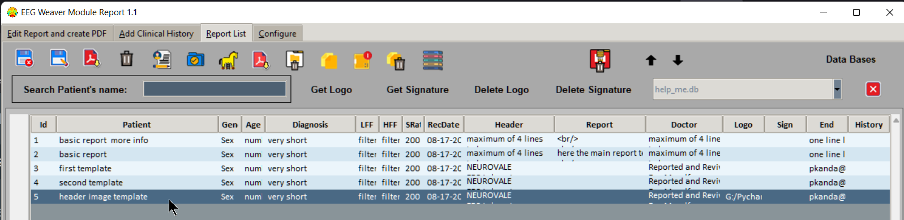
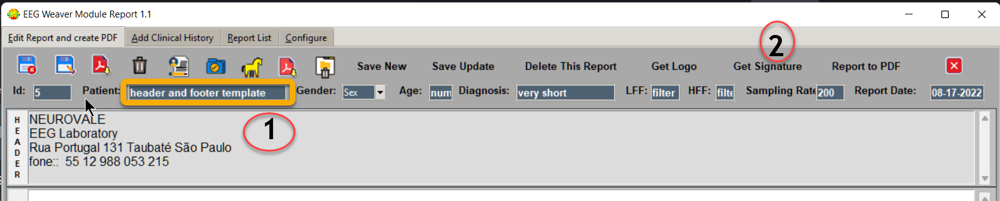
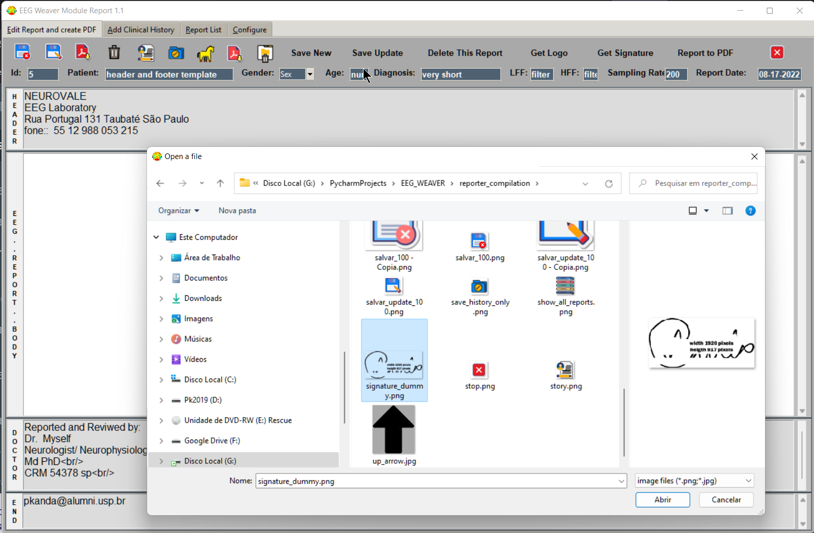
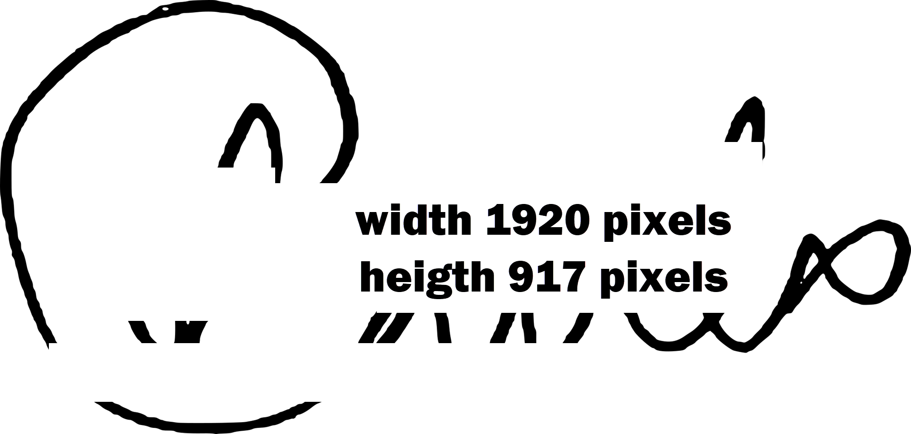
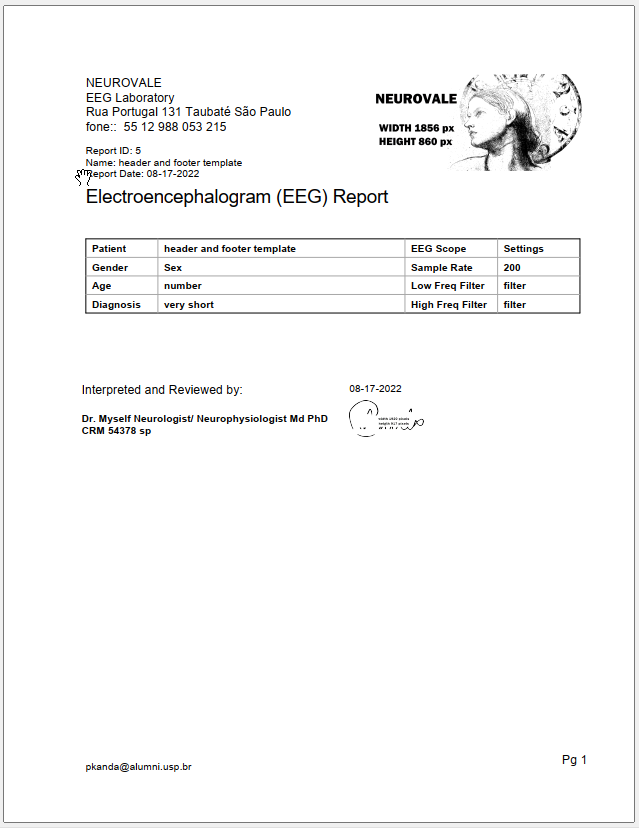

Improve report formatting - Insert a footer signature Image
Inserting a footer signature image.
on Tab3, select a report, in our example “header image template” which doesnot have a footer image.
Go to Tab1, change “Patient” name to, for example, “header and footer template” and “Get signature”.
Now in Tab3 you have two diferent templates “header and footer template” and “header image template”.
“Get Signature” in Tab1 allows you to select an image from any folder. An windows opens for image selection.
The size of the footer signature image in pixes is shown bellow.
You can use your own image with the same size. Scan or photograph your sgnature and edit size in a free image editor.
Select image, close window, come back to Tab1, click on “Save changes before closing”.
Click on “Create and Save Report to PDF” to save pdf and see the result.
Now this report has a header and footer image.
The result pdf is:
To remove image from footer you can change to a blank image (there is one in install folder –>signature_blank.png) or use the previous template, in our case “header image template” (without image), or you can go to Tab 3 and “Delete Signature”.